Administrators have exclusive use cases for the TMC webapp, that need to be practiced. This page will list these use cases.
The simplest way to create a course is to copy it from a template. This way teachers won't have to create new exercise repositories for their courses. One of the biggest responsibilities for an administrator is managing course templates in the TMC webapp.
When logged in as administrator, visiting /course_templates will bring you here:
This page lists all course templates in the database with their relevant information. By clicking 'New Course template' you can create a new template through this form:
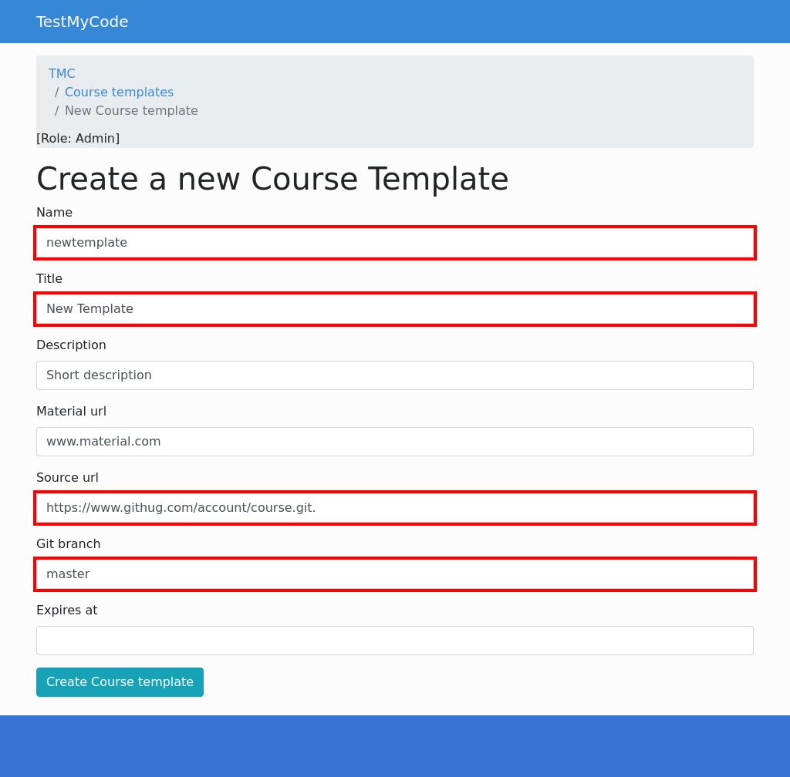Highlighted fields are required and can't be left blank. Explanation for each field:
All of these fields except for Source url, Git branch and Expires at may be changed by the teacher during the course copying process to suit their needs.
After clicking 'Create course template', TMC will show the list of all templates again.
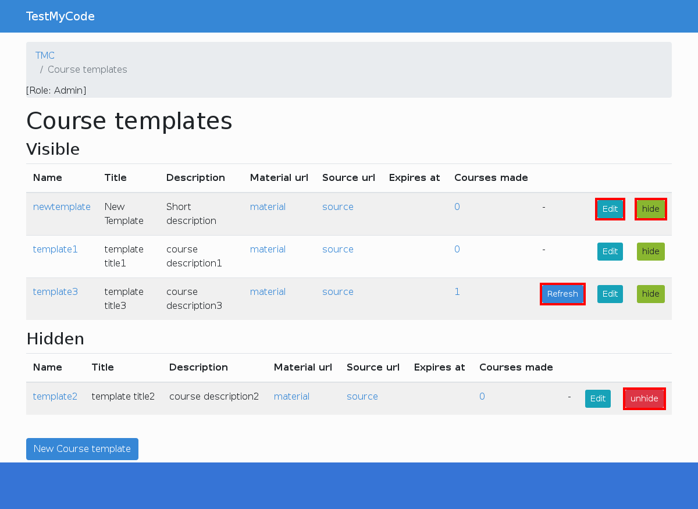Whenever any changes to the remote repository are made (new exercises added, exercises removed, etc), the course template that uses that repository needs to be refreshed. You can refresh only course templates, which already have some courses made from them. After clicking 'Refresh', all courses created from the template will be up-to-date. This operation takes some time.
Course template default fields may be edited at any time by administrator via the link 'Edit'. Expiration date may be changed through the same link.
Course templates may be hidden instead of being destroyed. Hidden templates will not be available for copying as if they were destroyed, even though the template still exists in the database.
Another responsibility for administrators is to verify all new created organizations. They can be either verified or disabled. Anyone can create a new organization, so they should be verified through careful consideration.
Administrators will see this notice on the front page when there are any unverified new organizations:
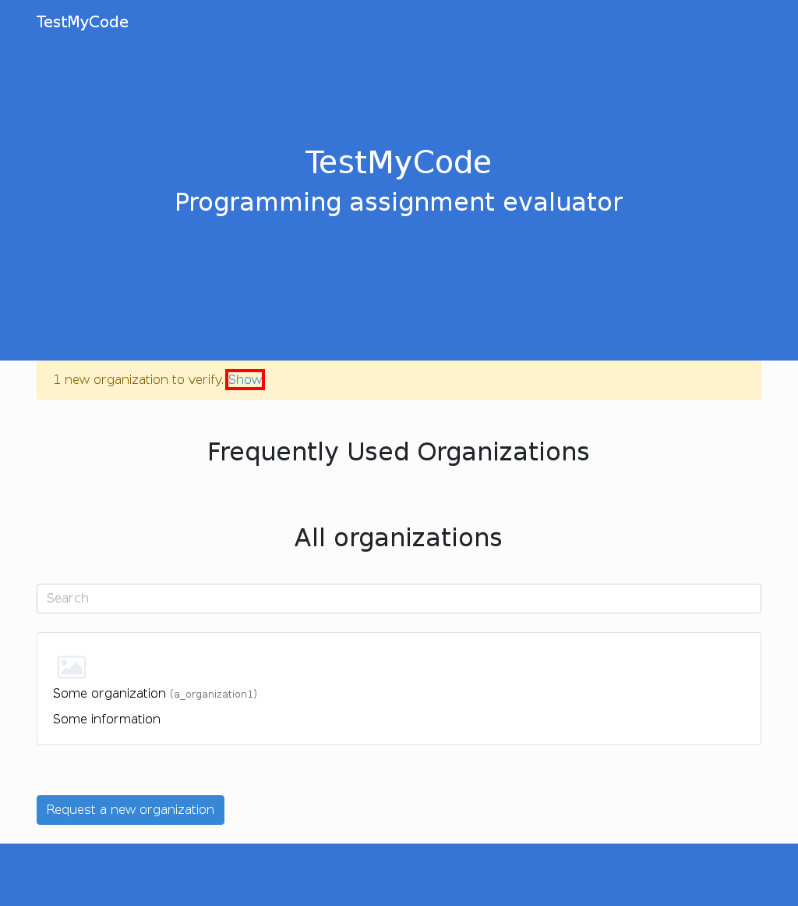Clicking 'show' will list all unverified organizations.
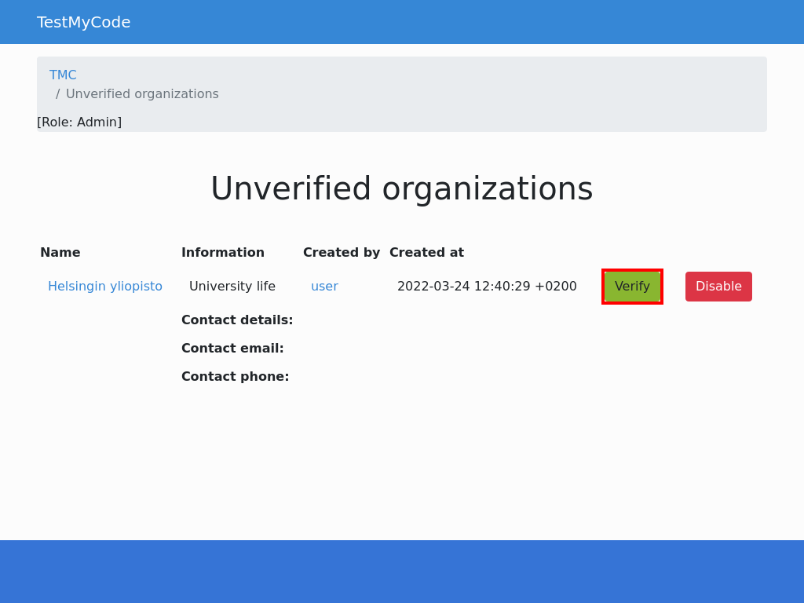 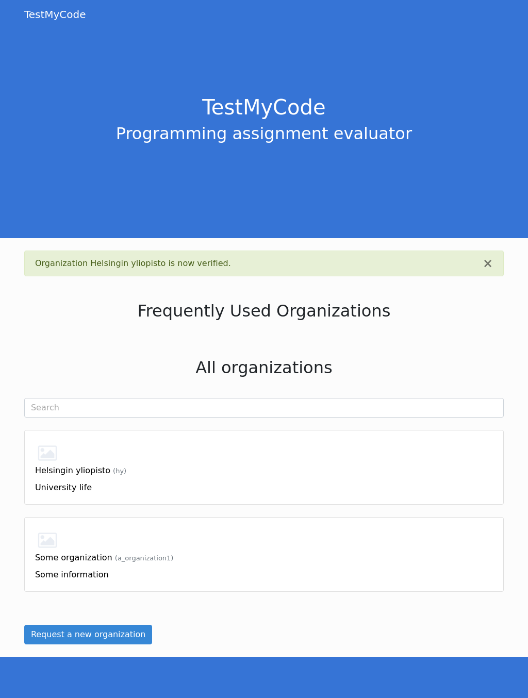After clicking 'Verify', organization is fully operational.
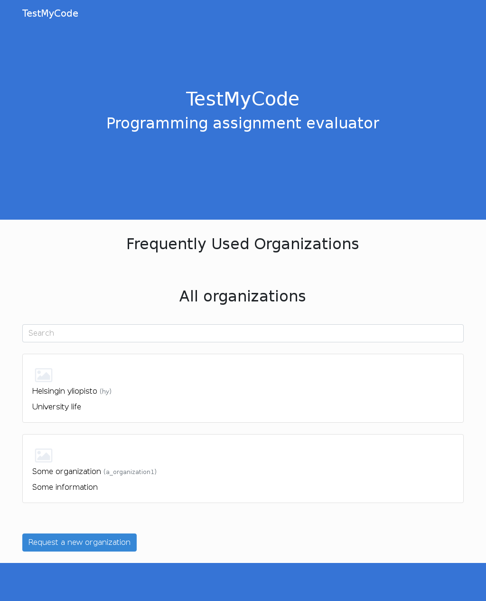Alternatively, after clicking 'Disable', administrator must fill a form to give a reason for disabling.
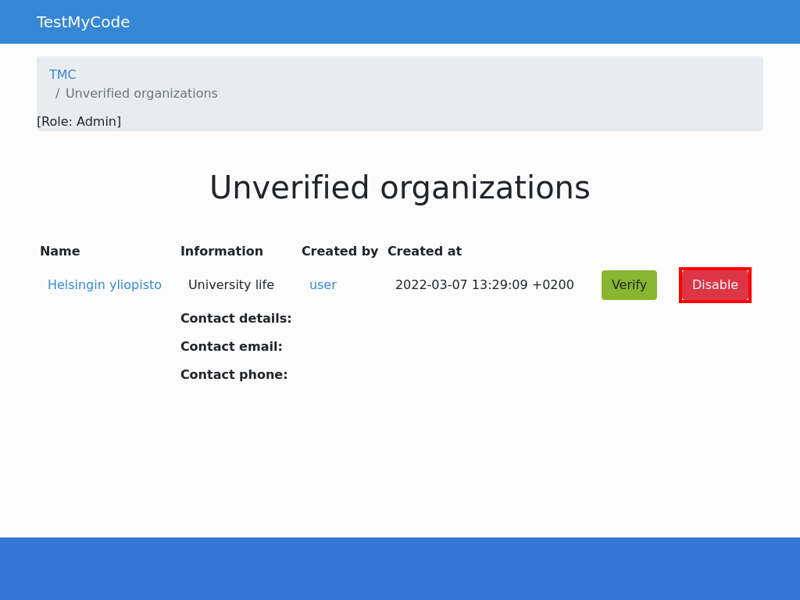 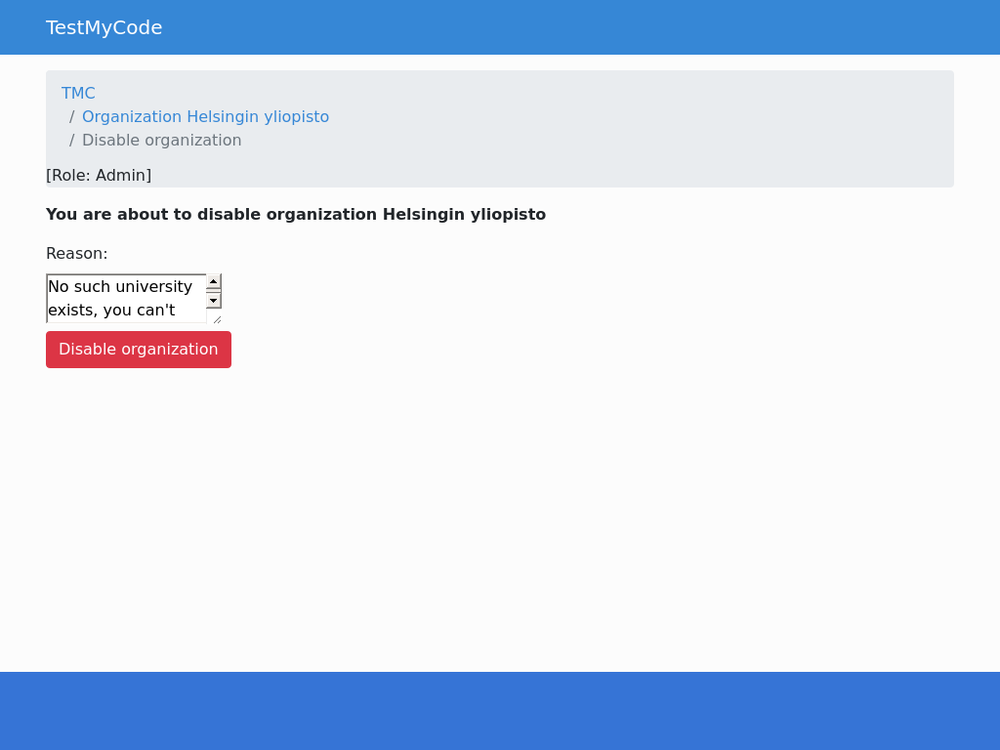 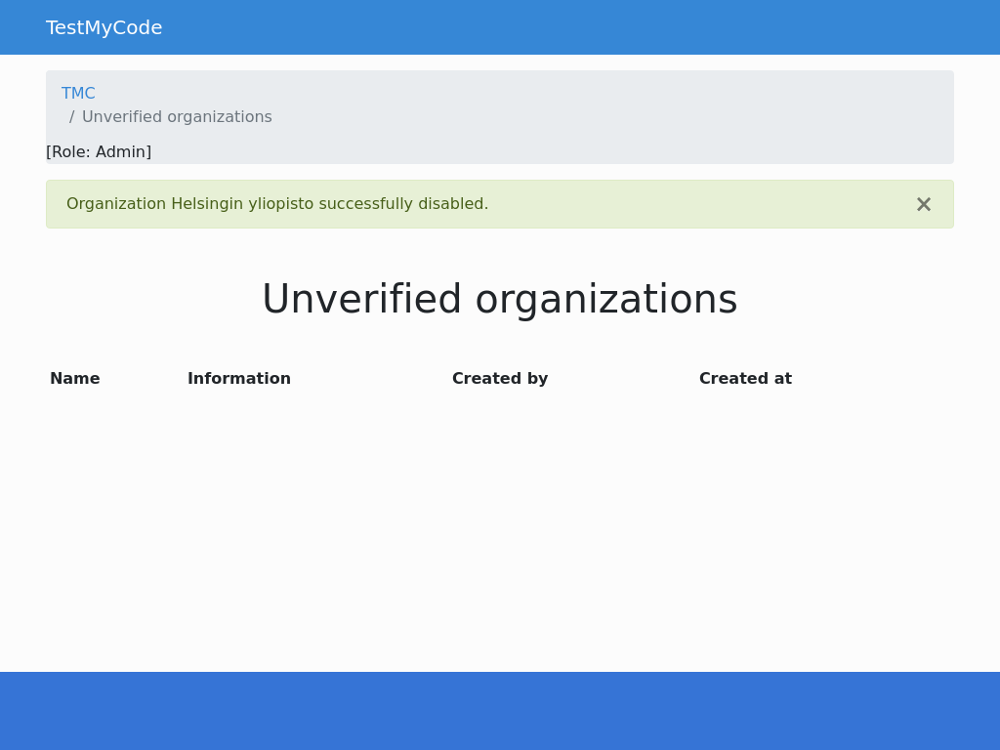Disabled organizations will not be shown anywhere in the front page.
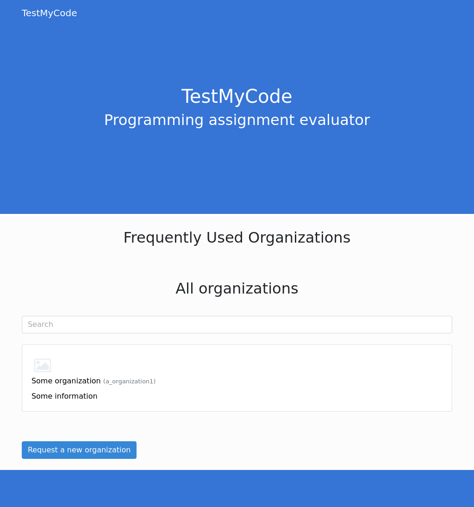When a new course is made, first real-time refresh is made only partly, without generating available points for exercises. Because of that, full refresh is launched on background. As administrator, the front page shows if there are any ongoing background refreshes, and when they were made. Based on that, you can monitor possible problems, if certain course stays on the refresh list for too long.
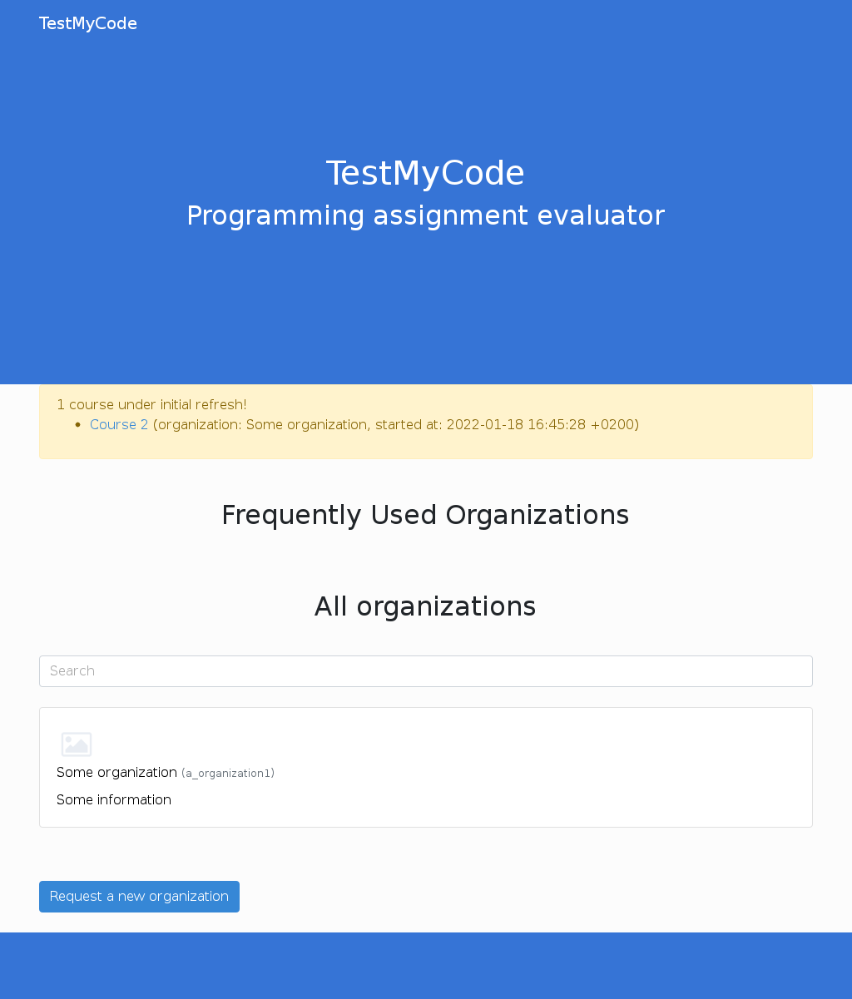